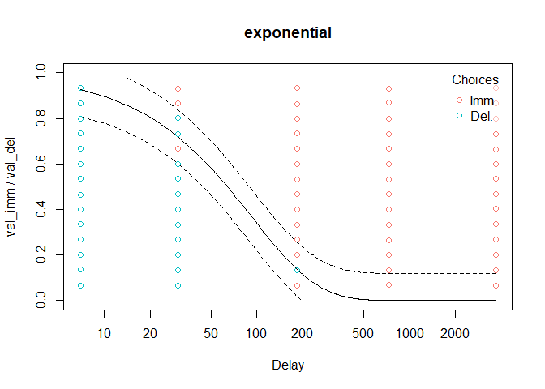

tempodisco is an R package for behavioural researchers working with delay discounting data (also known as temporal discounting intertemporal choice data). It implements common tasks such as scoring responses (e.g. computing indifference points from an adjusting amounts procedure, computing the “area under the curve”, or computing values as in the Monetary Choice Questionnaire; Frye et al., 2016; Myerson et al., 2001; Kirby et al., 1999), identifying poor-quality data (e.g. failed attention checks and non-systematic responding; Johnson & Bickel, 2008), modelling choice data using multiple discount functions (e.g. hyperbolic, exponential, etc.—see below; Franck et al., 2015), and modelling reaction times using drift diffusion models (Peters & D’Esposito, 2020).
Installation
You can install tempodisco from GitHub with:
# install.packages("devtools")
devtools::install_github("kinleyid/tempodisco")Getting started
See the documentation, particularly the “Getting started” page, for example usage.
Overview
A good practice in delay discounting research is to not assume that the same discount function describes every individual (Franck et al., 2015). tempodisco implements the following discount functions and can automatically select the best one for a given individual according to the Bayesian information criterion (Schwartz, 1978):
| Name | Functional form | Notes |
|---|---|---|
exponential (Samuelson, 1937) |
||
scaled-exponential (Laibson, 1997) |
Also known as quasi-hyperbolic or beta-delta | |
nonlinear-time-exponential (Ebert & Prelec, 2007) |
Also known as constant sensitivity | |
dual-systems-exponential (Ven den Bos & McClure, 2013) |
||
inverse-q-exponential (Green & Myerson, 2004) |
Also known as generalized hyperbolic (Loewenstin & Prelec), hyperboloid (Green & Myerson, 2004), or q-exponential (Han & Takahashi, 2012) | |
hyperbolic (Mazur, 1987) |
||
nonlinear-time-hyperbolic (Rachlin, 2006) |
Also known as power-function (Rachlin, 2006) | |
additive-utility (Killeen, 2009) |
Here, is the value of the delayed reward. | |
power (Harvey, 1986) |
These discount functions can be fit to indifference point data (see td_ipm), choice-level data (see td_bcnm), or data including both choices and reaction times (see td_ddm).
After fitting a model, we can check to see how well it matches the data using the plot() function:
library(tempodisco)
data("td_bc_single_ptpt")
mod <- td_bcnm(td_bc_single_ptpt, discount_function = c('hyperbolic', 'exponential'))
plot(mod, p_lines = c(0.1, 0.9), log = 'x', verbose = F)
Note that the discount curve contains an inflection point because the x-axis is on a log scale. See the “Visualizing models” page of the documentation for more examples.
Further reading
The “Examples” tab on the documentation contains a list of tutorials on solving common problems in delay discounting research.
Reporting issues and requesting features
If you encounter problems with the software or would like to it to have additional functionality, please open a new issue on the GitHub repository. Try to include as much detail as possible, especially how to reproduce any errors/incorrect results. GitHub has instructions on opening an issue here.
Contributing
If you would like to contribute to tempodisco, you’re more than welcome! Please follow the instructions here on how to contribute to a project on GitHub. Feel free to contact me if you’d like help with any contributions.